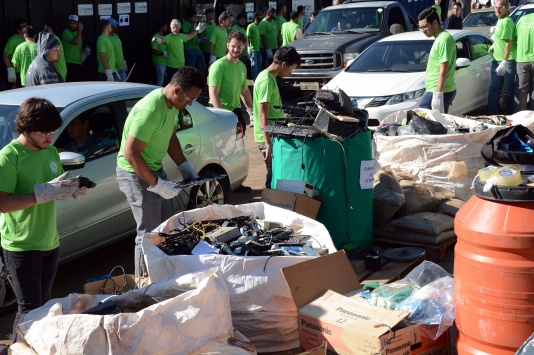
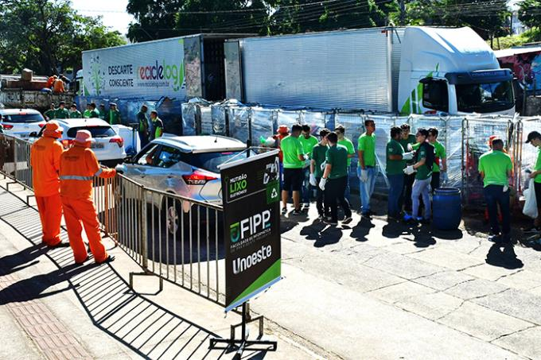
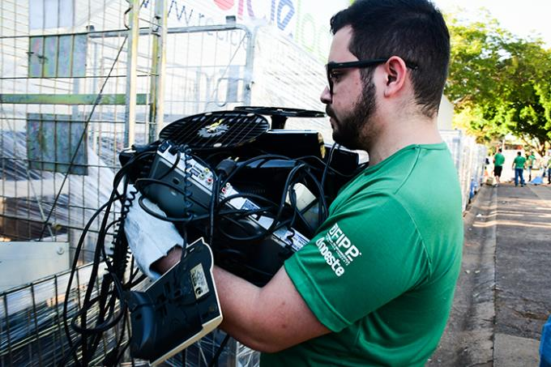
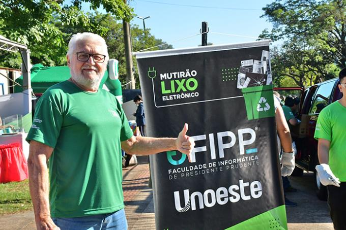

O resultado do Mutirão do Lixo Eletrônico 2023 junta ao volume recebido do descarte feito pela comunidade fatos significativos. Para a gerente de relações institucionais da Associação Brasileira de Reciclagem de Eletroeletrônicos e Eletrodomésticos (Abree), Helen de Souza Brito, o evento em Presidente Prudente é modelo para o Brasil.
Ao falar da parceira de três anos da Abree com a Prefeitura e Unoeste, contou que tinha uma visão por fotos e agora, pela primeira vez, pode ver presencialmente. Disse também que o evento já era divulgado como exemplo para outros municípios. “Mas só vindo aqui para ver a grandiosidade”, afirmou, manifestando o entendimento sobre o que faz a diferença: a universidade como ponte entre a administração pública e a população; juntas agregando parceiros e mobilizando toda a comunidade. “Em outras cidades a gente não vê tantas pessoas atendendo o apelo para o descarte correto; tão engajadas”, pontuou.

Em conversa com o pró-reitor de pesquisa, pós-graduação e extensão Dr. Adilson Eduardo Guelfi ficaram preliminarmente acertadas ações de coleta de lixo eletrônico junto aos campi da Unoeste em Jaú e Guarujá, ainda este ano. No ano passado, a Abree fez ação em Guarujá junto à Cooperativa Mundo Novo. Agora, a proposta é levar a experiência de Prudente para reforçar a parceria na cidade litorânea e também para realizar a primeira ação de grande porte em Jaú. São entendimentos que também envolvem o gerente de operações da Abree, Robson Diego de Almeida.
O Mutirão do Lixo Eletrônico 2023, a exemplo de outras 14 edições anteriores, foi centralizado no recuo do Parque do Povo, em frente a TV Fronteira. Os demais pontos foram nos bairros Ana Jacinta (zona sul), João Domingos Netto (zona norte) e Parque Alvorada (zona leste). Na sexta-feira (2), houve coleta do material descartado por moradores dos distritos de Ameliópolis, Eneida, Floresta e Montalvão. O volume total de todos os pontos lotou duas carretas da GM&C, empresa de São José dos Campos, com mais de 20 anos de experiência em logística reversa e reciclagem.
A estimativa é de que no total foram arrecadadas 24 toneladas. Próximo da previsão de 30 toneladas: o que se explica pelo maior tempo de vida útil de vários produtos, a exemplo de desktop (computador fixo) e laptop (computador móvel), seja pela tecnologia de fabricação ou cuidados como os de manutenção preventiva e outros. O secretário municipal de tecnologia Helton Sapia tocou nesse assunto ao se manifestar publicamente no final do evento, momento em que agradeceu e enalteceu todos os envolvidos, parceiros, voluntários e, especialmente, a população.

Felipe é ingressante da Fipp e atuou recebendo produtos, 99% retirados de bagageiros de carros e carroçarias de utilitários. Antonio Donizete Gonçalves está no último ano do curso de Agronomia e atuou entregando mudas e sementes de árvores de várias espécies. Foram 160 mudas produzidas no Viveiro da Unoeste. Dentre elas, o Jequitibá-rosa, uma das cinco espécies mais ameaçadas de extinção. As sementes foram coletadas em expedições nas matas do oeste paulista, por estudantes de Agronomia.
Moradora de Pirapozinho, Iara Aparecida Fadin Silva cursa o 3º termo de Pedagogia EAD (a distância) e atuou na oficina Arte e Reciclagem, com o uso de peças inservíveis de eletroeletrônicos. Participaram alunos do ensino fundamental da Escola Municipal Domingos Ferreira de Medeiros, acompanhados pelas professoras e pela diretora. Também esteve presente a secretária municipal de Educação, Sirlei Oliveira.
O professor coordenador de cursos na Fipp, Haroldo Alessi, contou que foram mais de 100 dias de preparação do mutirão, mesmo com o know-how de 14 edições anteriores. A maioria das reuniões foi on-line, por conta da Abree estar sediada em São Paulo. Disse ainda que 150 estudantes de vários cursos atuaram como voluntários, sendo que no parque foram distribuídos em dois turnos: manhã e tarde. O diretor da Fipp, professor Moacir Del Trejo, comentou que a cada ano a organização está mais afinada e que o mutirão está no DNA da Unoeste que figura no Ranking Mundial de Sustentabilidade.
O pró-reitor Dr. Adilson avaliou como positivo o Mutirão do Lixo Eletrônico 2023, por mais uma vez contribuir para que Prudente e região atinja índices de responsabilidade ambiental. No encerramento do evento, em fala pública, agradeceu à população, prefeito Ed Thomas, vice-prefeito Izaque Silva, secretário Helton Sapia, secretaria de Finanças, Célia Molinari, que estava presente, e aos demais secretários. E terminou afirmando que a Missão da Unoeste é comprometida com a responsabilidade social e ambiental.
